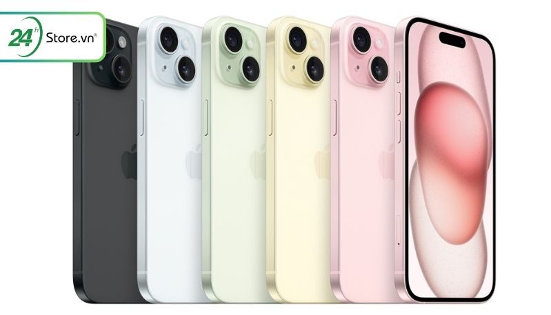
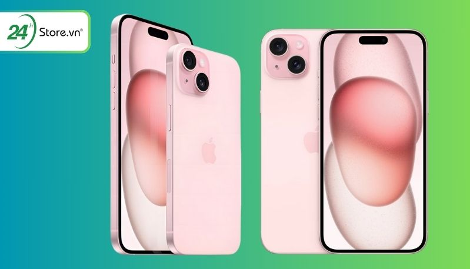
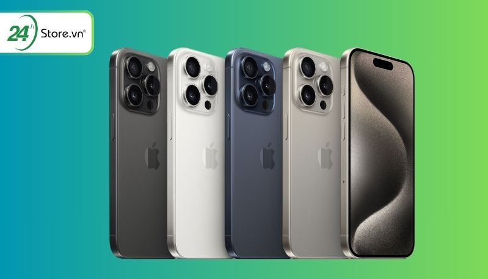
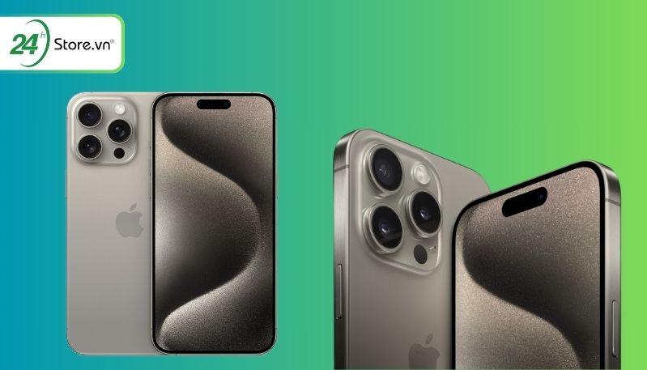
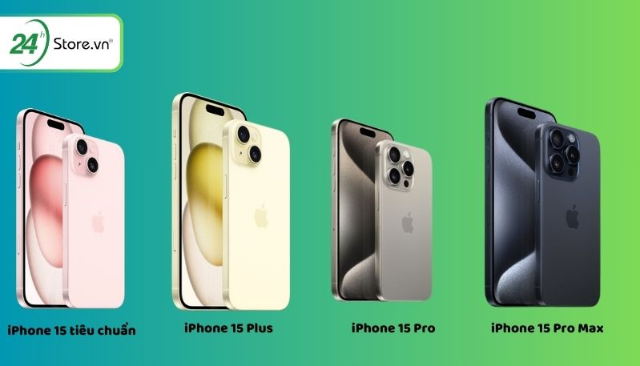

iPhone 15 có mấy loại? NÊN MUA iPhone 15 nào tốt?
18/04/2024
Sau nhiều tin đồn về iPhone 15 Mini, iPhone 15 gập, iPhone 15 Ultra. Ngày 13/09/2023 vừa qua, Apple đã chính thức “xóa tan” tin đồn khi trình làng iPhone 15 Series với 4 phiên bản: iPhone 15 tiêu chuẩn, iPhone 15 Plus, iPhone 15 Pro, iPhone 15 Pro Max giải đáp được thắc mắc iPhone 15 có mấy loại. Tuy nhiên điều này đã khiến cho nhiều người không biết nên chọn iPhone loại nào phù hợp. Hãy cùng 24hStore tìm hiểu và đánh giá chi tiết từng phiên bản trước khi ra quyết định mua nhé!
1.4 Phiên bản nổi bật nhất của iPhone 15 Series 2023
iPhone 15 có mấy loại hay mấy phiên bản đã được Apple giải đáp vào ngày 12/9 trong sự kiện ra mắt iPhone 15 Series vừa qua. Như vậy, iPhone 15 Series 2023 có 4 loại: iPhone 15 tiêu chuẩn, iPhone 15 Plus, iPhone 15 Pro và iPhone 15 Pro Max. Tương ứng với đó là với 4 tùy chọn Thời lượng ROM cùng 9 lựa chọn màu sắc. Cùng so sánh các iPhone 15 và nêu ra các đặc điểm sau đây nhé.
1.1.iPhone 15 tiêu chuẩn
iPhone 15 thường được trình làng vào ngày 13/09/2023 với 3 phiên bản bộ nhớ gồm: 128GB, 256GB, 512GB. Đi cùng với đó là 5 phiên bản màu sắc trẻ trung, hiện đại như màu: Pink (Hồng), Yellow (Vàng), Blue (Xanh dương), Green (Xanh lá), Black (Đen). Trong đó phiên bản iPhone 15 tiêu chuẩn màu xanh lá và hồng là màu sắc mới chưa từng có trên các phiên bản iPhone trước đây.
Đặc điểm của iPhone 15 tiêu chuẩn:
| Tiêu chí | Thông số chi tiết | Điểm nổi bật |
|---|---|---|
| Kích thước màn hình | 6.1 inch | |
| Trọng lượng | 171g | |
| Hỗ trợ Dynamic Island | Có | Lần đầu xuất hiện trên một mẫu iPhone tiêu chuẩn |
| Camera trước | 12MP, f/1.9 | |
| Camera sau | Camera chính: 48MP Camera góc rộng: 12MP Camera Tele: 12MP |
Chụp ảnh chân dung mà không cần chuyển sang chế độ Chân Dung |
| Tính năng đặc biệt trên camera | Độ phóng đại quang học 2x Độ phân giải lên đến 4x Độ thu phóng kỹ thuật số lên đến 10x |
|
| Chất lượng video | 4K, Full HD | |
| Màu sắc | Hồng (Pink) Vàng (Yellow) Xanh lá (Green) Đen (Black) Xanh dương (Blue) Những màu sắc pastel cực đẹp, trẻ trung, hiện đại đặc biệt màu hồng (Pink) cuốn hút lần đầu trình làng trên iPhone 15 Series |
|
| Chất liệu vỏ ngoài | Nhôm cấp hàng không vũ trụ. Mặt lưng bằng kính pha màu | |
| Chip | A16 Bonic (CPU 6 lõi + GPU 5 lõi) | Trước đây chỉ được trang bị cho iPhone 14 Pro và Pro Max |
| Thời lượng pin | 8 tiếng (Wifi + 4G + Tác vụ cơ bản) Xem và phát video liên tục trong 20 tiếng Khả năng sạc nhanh lên đến 50% chỉ trong vòng 30 phút |
|
| RAM | 6 GB | |
| Dung lượng bộ nhớ trong (ROM) | 128GB, 256GB, 512GB | |
| Hệ điều hành iOS | iOS 17 | |
| Chuẩn WiFi | Wi-Fi 6 | |
| Cổng sạc | USB-C 2 | |
| Tốc độ sạc | Sạc không dây MagSafe lên đến 15W Sạc không dây Qi lên đến 7,5W Tốc độ sạc không dây nhanh hơn 5W |
|
| Cảm biến | Trợ lý ảo Siri, Apple Pay, NFC | |
| Bảo mật | Face ID (Camera TrueDepth hỗ trợ nhận diện khuôn mặt) |
(Bảng thông số iPhone 15 tiêu chuẩn chi tiết)
iPhone 15 tiêu chuẩn giá bao nhiêu?
Cập nhật thông tin mới và chính xác nhất từ Apple, iPhone 15 tiêu chuẩn sẽ có 3 mức dung lượng và tương ứng với từng mức giá bán iPhone 15 tiêu chuẩn cụ thể như sau:
| Phiên bản | Giá bán tại nước ngoài (USD) | Giá bán tại 24hStore (VNĐ) |
|---|---|---|
| iPhone 15 128GB | 799 USD (Từ 19 triệu VNĐ) | 19.490.000 VNĐ |
| iPhone 15 256GB | 899 USD (Từ 21.3 triệu VNĐ) | 25.990.000 VNĐ |
| iPhone 15 512GB | 1.099 USD (Từ 26.1 triệu VNĐ) | 28.290.000 VNĐ |
(Giá bán iPhone 15 tiêu chuẩn)
Ngoài các mẫu iPhone 15 thường mới giá tốt, nếu bạn chỉ muốn trải nghiệm những tính năng mới trên dòng 15 tiêu chuẩn nhưng chưa muốn đầu tư mua máy mới có thể tham khảo ngay dòng máy iPhone 15 cũ giá rẻ tại 24hStore nhé.
1.2 iPhone 15 Plus
iPhone 15 Plus là một trong những phiên bản đáng sở hữu nhất 2023. Với những tính năng tương tự iPhone 15 tiêu chuẩn nhưng với kích thước màn hình ngang bằng với iPhone 15 Pro Max. Bên cạnh đó đây cũng là phiên bản có thời lượng pin trâu nhất trong tất cả các dòng iPhone 15 được ra mắt.
Đặc điểm chung của iPhone 15 Plus:
| Tiêu chí | Thông số chi tiết | Điểm nổi bật |
|---|---|---|
| Kích thước màn hình | 6.7 inch | |
| Trọng lượng | 201 gram | |
| Hỗ trợ Dynamic Island | Có | |
| Camera trước | 12MP, f/1.9 | |
| Camera sau | 48MP + 12MP | Camera chính 48MP trước đây chỉ có trên những mẫu iPhone Pro |
| Tính năng đặc biệt trên camera | - Độ phóng đại quang học 2x - Độ thu nhỏ quang học 2x; phạm vi thu phóng quang học 4x - Độ thu phóng kỹ thuật số lên đến 10x |
|
| Chất lượng video | 4K, Full HD | |
| Màu sắc | Hồng (Pink) Vàng (Yellow) Xanh lá (Green) Đen (Black) Xanh dương (Blue) |
Dải màu độc đáo, tươi sáng, trẻ trung, hiện đại, hợp xu hướng |
| Chất liệu vỏ ngoài | Nhôm hàng không vũ trụ | |
| Chip | A16 Bonic CPU 6 nhân - GPU 5 nhân | |
| Thời lượng pin | 9 - 11 giờ | Pin trâu nhất trong tất cả các loại iPhone 15 |
| RAM | 6GB | |
| Dung lượng bộ nhớ trong (ROM) | 128GB, 256GB, 512GB | |
| Hệ điều hành iOS | iOS 17 | |
| Chuẩn WiFi | Wi-Fi 6 | |
| Cổng sạc | USB-C 2.0 | Công suất 20W |
| Tốc độ sạc | Sạc không dây MagSafe lên đến 15W Sạc không dây Qi lên đến 7,5W Sạc nhanh lên đến 50% trong vòng 30 phút |
|
| Cảm biến | Trợ lý ảo Siri, Apple Pay, NFC | |
| Bảo mật | Face ID |
(Bảng thông số iPhone 15 Plus chi tiết)
iPhone 15 Plus giá bao nhiêu?
Giá bán iPhone 15 Plus tất cả các màu chi tiết như sau:
| Tiêu chí | Thông số chi tiết | Điểm nổi bật |
|---|---|---|
| Kích thước màn hình | 6.7 inch | |
| Trọng lượng | 201 gram | |
| Hỗ trợ Dynamic Island | Có | |
| Camera trước | 12MP, f/1.9 | |
| Camera sau | 48MP + 12MP | Camera chính 48MP trước đây chỉ có trên những mẫu iPhone Pro |
| Tính năng đặc biệt trên camera | - Độ phóng đại quang học 2x - Độ thu nhỏ quang học 2x; phạm vi thu phóng quang học 4x - Độ thu phóng kỹ thuật số lên đến 10x |
|
| Chất lượng video | 4K, Full HD | |
| Màu sắc | Hồng (Pink) Vàng (Yellow) Xanh lá (Green) Đen (Black) Xanh dương (Blue) |
Dải màu độc đáo, tươi sáng, trẻ trung, hiện đại, hợp xu hướng |
| Chất liệu vỏ ngoài | Nhôm hàng không vũ trụ | |
| Chip | A16 Bonic CPU 6 nhân - GPU 5 nhân | |
| Thời lượng pin | 9 - 11 giờ | Pin trâu nhất trong tất cả các loại iPhone 15 |
| RAM | 6GB | |
| Dung lượng bộ nhớ trong (ROM) | 128GB, 256GB, 512GB | |
| Hệ điều hành iOS | iOS 17 | |
| Chuẩn WiFi | Wi-Fi 6 | |
| Cổng sạc | USB-C 2.0 | Công suất 20W |
| Tốc độ sạc | Sạc không dây MagSafe lên đến 15W Sạc không dây Qi lên đến 7,5W Sạc nhanh lên đến 50% trong vòng 30 phút |
|
| Cảm biến | Trợ lý ảo Siri, Apple Pay, NFC | |
| Bảo mật | Face ID |
(Giá bán iPhone 15 Plus)
1.3. iPhone 15 Pro
iPhone 15 Pro là một trong 2 phiên bản cao cấp được Apple cho ra mắt năm 2023. Với thiết kế màn hình nhỏ gọn tương đương với iPhone 15 tiêu chuẩn nhưng cải tiến thêm nhiều tính năng vượt trội cùng hiệu năng không thua kém phiên bản iPhone 15 Pro Max.
Đặc điểm chung của iPhone 15 Pro:
| Tiêu chí | Thông số chi tiết | Điểm nổi bật |
|---|---|---|
| Kích thước màn hình | 6.1 inch | |
| Trọng lượng | 201 gram | |
| Hỗ trợ Dynamic Island | Có | |
| Camera trước | 12MP, f/1.9 | |
| Camera sau | 48MP + 12MP + 12MP | |
| Tính năng đặc biệt trên camera | - Độ phóng đại quang học 3x, độ thu nhỏ quang học 2x; phạm vi thu phóng quang học 6x - Độ thu phóng kỹ thuật số lên đến 15x - Chụp chân dung thế hệ mới với tính năng Focus và Depth Control - Chế độ Ban đêm và Smart HDR được cải tiến |
Tương đương với bảy ống kính chuyên nghiệp |
| Chất lượng video | 4K, Full HD | - Chống rung video kỹ thuật số (4K, 1080p, và 720p) - Action Mode - Audio zoom |
| Màu sắc | Titan Đen (Black Titanium) Titan Trắng (White Titanium) Titan Xanh (Blue Titanium) Titan Tự Nhiên (Natural Titanium) |
Dải màu độc đáo kết hợp cùng khung viền Titan lần đầu xuất hiện |
| Chất liệu vỏ ngoài | Khung titan hạng 5 | Titan được Apple sử dụng lần đầu tiên trên iPhone 15 |
| Chip | A17 Pro 3nm (CPU 6 lõi + GPU 6 lõi + Neural Engine 16 lõi) | Con chip chạy trên tiến trình 3nm mới nhất của Apple |
| Thời lượng pin | 7 giờ (Wifi + 4G + Tác vụ cơ bản) | |
| RAM | 8GB | |
| Dung lượng bộ nhớ trong (ROM) | 128GB, 256GB, 512GB, 1TB | |
| Hệ điều hành iOS | iOS 17 | |
| Chuẩn WiFi | Wi-Fi 6E | Chuẩn Wi-Fi mới nhất, không có trên các mẫu iPhone 14 Pro |
| Cổng sạc | USB-C 3.0 tốc độ truyền tải nhanh hơn 20 lần | Công suất 20W |
| Tốc độ sạc | Sạc không dây MagSafe lên đến 15W Sạc không dây Qi lên đến 7,5W Tốc độ sạc có dây (USB-C) nhanh gần gấp đôi dòng iPhone tiền nhiệm, tốc độ sạc không dây nhanh hơn 5W Tốc độ sạc không dây (Magsafe) lên đến 15W |
|
| Cảm biến | Trợ lý ảo Siri, Apple Pay, NFC | |
| Bảo mật | Face ID (Camera TrueDepth hỗ trợ nhận diện khuôn mặt) |
(Bảng thông số iPhone 15 Pro chi tiết)
iPhone 15 Pro giá bao nhiêu?
Theo thông tin mới và chính xác nhất từ hãng Apple, giá bán iPhone 15 Pro theo từng phiên bản dung lượng như sau:
| Phiên bản iPhone 15 Pro chính hãng | Giá bán tại nước ngoài | Giá bán tại 24hStore |
|---|---|---|
| iPhone 15 Pro 128GB | 999 USD (Từ 24 triệu VNĐ) | 26.990.000 VNĐ |
| iPhone 15 Pro 256GB | 1.099 USD (Từ 26.1 triệu VNĐ) | 27.490.000 VNĐ |
| iPhone 15 Pro 512GB | 1.299 USD (Từ 31.3 triệu VNĐ) | 35.690.000 VNĐ |
| iPhone 15 Pro 1TB | 1.499 USD (Từ 35 triệu VNĐ) | 39.190.000 VNĐ |
(Giá bán iPhone 15 Pro)
Trên đây là bảng giá iPhone 15 Pro mới, ngoài ra nếu bạn muốn trải nghiệm ngay những tính năng mới nhất nhưng không muốn chi trả một số tiền quá lớn cho chiếc điện thoại mới bạn hoàn toàn có thể lựa chọn mua iPhone 15 Pro cũ chính hãng, hàng đẹp, giá rẻ hơn 30-40% so với máy mới tại 24hStore.
1.4. iPhone 15 Pro Max
Phiên bản iPhone 15 Pro Max là chiếc điện thoại cao cấp nhất 2023 được Apple trình làng. Với hàng loạt năng cấp, trang bị camera độc quyền,... cùng những tính năng chỉ có trên iPhone 15 Pro Max và cấu hình mạnh mẽ đã tạo nên đẳng cấp cho chiếc điện thoại “đình đám” nhất hiện nay.
Mua iPhone 15 Pro Max cũ like new 99%, hàng đẹp, giá cực tốt so với máy mới, hỗ trợ trả góp 0%, nhiều ưu đãi hấp dẫn chỉ có tại 24hStore
Đặc điểm chung của iPhone 15 Pro Max:
| Tiêu chí | Thông số chi tiết | Điểm nổi bật |
|---|---|---|
| Kích thước màn hình | 6.7 inch | |
| Trọng lượng | 221 g | |
| Hỗ trợ Dynamic Island | Có | |
| Camera trước | 12MP, f/1.9 | |
| Tính năng đặc biệt trên camera | Độ phóng đại quang học 5x, độ thu nhỏ quang học 2x; phạm vi thu phóng quang học 10x Độ thu phóng kỹ thuật số lên đến 25x Chụp chân dung thế hệ mới với tính năng Focus và Depth Control Chế độ Ban đêm và Smart HDR 5 được cải tiến Tương đương với bảy ống kính chuyên nghiệp |
|
| Chất lượng video | 4K, Full HD | |
| Màu sắc | Titan Đen (Black Titanium) Titan Trắng (White Titanium) Titan Xanh (Blue Titanium) Titan Tự Nhiên (Natural Titanium) |
Khung viền Titan kết hợp dải màu trầm, sang trọng lần đầu có trên iPhone |
| Chất liệu vỏ ngoài | Khung titan hạng 5 Chất liệu Titan lần đầu tiên được Apple sử dụng trên dòng iPhone 15 |
|
| Chip | A17 Pro 3nm 6 lõi GPU - 6 lõi CPU | Con chip mới nhất, chưa có mặt trên thị trường |
| Thời lượng pin | 8 giờ (Wifi + 4G + Tác vụ cơ bản) Phát video liên tục lên đến 29 giờ |
|
| RAM | 8GB | |
| Dung lượng bộ nhớ trong (ROM) | 256GB, 512GB, 1TB | |
| Hệ điều hành iOS | iOS 17 | |
| Chuẩn WiFi | Wi-Fi 6E Chuẩn Wi-Fi mới và tốc độ kết nối cao nhất, chưa từng xuất hiện trên các phiên bản iPhone trước đây |
|
| Cổng sạc | USB-C 3.0 tốc độ truyền tải nhanh hơn 20 lần Công suất 20W |
|
| Tốc độ sạc | Sạc không dây MagSafe lên đến 15W Sạc không dây Qi lên đến 7,5W Sạc lên đến 50% trong vòng 30 phút |
|
| Cảm biến | Trợ lý ảo Siri, Apple Pay, NFC | |
| Bảo mật | Face ID |
(Bảng thông số iPhone 15 Pro Max chi tiết)
iPhone 15 Pro Max giá bao nhiêu?
Khác với phiên bản iPhone 15 Pro, iPhone 15 Pro Max đã được Apple khai tử dung lượng 128GB. Vì thế chỉ có thể sở hữu các mức dung lượng từ 256GB, 512GB và 1TB trên phiên bản này. Giá bán iPhone 15 Pro Max được Apple thông tin như sau:
| Phiên bản iPhone 15 Pro Max | Giá bán tại nước ngoài | Giá bán tại 24hStore |
|---|---|---|
| iPhone 15 Pro Max 256GB | 1.199 USD (Từ 28.5 triệu VNĐ) | 30.890.000 VNĐ |
| iPhone 15 Pro Max 512GB | 1.399 USD (Từ 33.8 triệu VNĐ) | 38.390.000 VNĐ |
| iPhone 15 Pro Max 1TB | 1.599 USD (Từ 38.6 triệu VNĐ) | 44.190.000 VNĐ |
(Giá bán iPhone 15 Pro Max)
Như vậy bạn đã biết được iPhone 15 có bao nhiêu loại và chi tiết các thông tin về các phiên bản iPhone 15 mới nhất hiện nay. Với nhiều cải tiến về cấu hình và tính năng nổi bật mà mỗi chiếc điện thoại sẽ phù hợp với từng mục đích sử dụng và nhu cầu khác nhau. Vậy nên mua iPhone 15 loại nào phù hợp với nhu cầu của bản thân. Tìm hiểu ngay dưới đây!
2. iPhone 15 nên mua loại nào tốt?
Để biết được iPhone 15 nên mua loại nào tốt và phù hợp hãy xem qua bảng so sánh cùng những đánh giá dưới đây.
2.1 So sánh chi tiết các loại iPhone 15 hiện nay
Dưới đây là bảng so sánh chi tiết 4 phiên bản iPhone 15 mà bạn có thể tham khảo trước khi đưa ra quyết định mua iPhone 15:
| Tiêu chí | iPhone 15 tiêu chuẩn | iPhone 15 Plus | iPhone 15 Pro | iPhone 15 Pro Max |
|---|---|---|---|---|
| Kích thước màn hình | 6.1 inch | 6.7 inch | 6.1 inch | 6.7 inch |
| Trọng lượng | 187 gram | 201 gram | 187 gram | 221 gram |
| Hỗ trợ Dynamic Island | Có | Có | Có | Có |
| Camera trước | 12MP, f/1.9 | 12MP, f/1.9 | 12MP, f/1.9 | 12MP, f/1.9 |
| Camera sau | 48MP + 12MP | 48MP + 12MP | 48MP + 12MP + 12MP | 48MP + 12MP + 12MP |
| Tính năng đặc biệt trên camera | Độ phóng đại quang học 2x | Độ thu nhỏ quang học 2x; phạm vi thu phóng quang học 4x | Độ thu phóng kỹ thuật số lên đến 10x | Độ phóng đại quang học 2x; Độ thu nhỏ quang học 2x; Phạm vi thu phóng quang học 4x |
| Chụp chân dung thế hệ mới với tính năng Focus và Depth Control | Có | Có | ||
| Chế độ Ban đêm và Smart HDR 5 được cải tiến | Có | Có | ||
| Chất lượng video | 4K, Full HD | 4K, Full HD | 4K, Full HD | 4K, Full HD |
| Chống rung video kỹ thuật số (4K, 1080p, và 720p) | Chống rung video kỹ thuật số (4K, 1080p, và 720p) | Action Mode, Audio zoom | Action Mode, Audio zoom | |
| Màu sắc | Hồng (Pink) | Vàng (Yellow) | Xanh lá (Green), Đen (Black), Xanh dương (Blue) | Titan Đen (Black Titanium), Titan Trắng (White Titanium), Titan Xanh (Blue Titanium), Titan Tự Nhiên (Natural Titanium) |
| Chất liệu vỏ ngoài | Nhôm cấp hàng không vũ trụ | Nhôm cấp hàng không vũ trụ | Titan hạng 5 | Titan hạng 5 |
| Chip | A16 Bionic CPU 6 lõi nhân - GPU 5 lõi nhân | A16 Bionic CPU 6 lõi nhân - GPU 5 lõi nhân | A17 Pro 3nm 6 lõi GPU - 6 lõi CPU | A17 Pro 3nm 6 lõi GPU - 6 lõi CPU |
| Thời lượng pin | 8 giờ (Wifi + 4G + Tác vụ cơ bản) | 9 -11 giờ (Wifi + 4G + Tác vụ cơ bản) | 7 giờ (Wifi + 4G + Tác vụ cơ bản) | 8 giờ (Wifi + 4G + Tác vụ cơ bản) |
| RAM | 6GB | 6GB | 8GB | 8GB |
| Thời lượng bộ nhớ (ROM) | 128GB, 256GB, 512GB | 128GB, 256GB, 512GB | 128GB, 256GB, 512GB, 1TB | 256GB, 512GB, 1TB |
| Chuẩn WiFi | Wi-Fi 6 | Wi-Fi 6 | Wi-Fi 6E | Wi-Fi 6E |
| Tốc độ sạc | Sạc không dây MagSafe lên đến 15W, Sạc không dây Qi lên đến 7,5W, Sạc lên đến 50% trong vòng 30 phút | Sạc không dây MagSafe lên đến 15W, Sạc không dây Qi lên đến 7,5W, Sạc lên đến 50% trong vòng 30 phút | Sạc không dây MagSafe lên đến 15W, Sạc không dây Qi lên đến 7,5W, Sạc lên đến 50% trong vòng 30 phút | Sạc không dây MagSafe lên đến 15W, Sạc không dây Qi lên đến 7,5W, Sạc lên đến 50% trong vòng 30 phút |
| Cảm biến | Trợ lý ảo Siri, Apple Pay, NFC | Trợ lý ảo Siri, Apple Pay, NFC | Trợ lý ảo Siri, Apple Pay, NFC | Trợ lý ảo Siri, Apple Pay, NFC |
| Bảo mật | Face ID | Face ID | Face ID | Face ID |
| Giá bán tại nước ngoài | 799 USD – 1.099 USD | 899 USD – 1.199 USD | 999 USD - 1.499 USD | 1.199 USD - 1.599 USD |
| Giá bán tại 24hStore | Từ 19.490.000 VNĐ - 28.290.000 VNĐ | Từ 22.490.000 VNĐ - 31.990.000 VNĐ | Từ 26.990.000 VNĐ - 39.190.000 VNĐ | Từ 30.890.000 VNĐ - 44.190.000 VNĐ |
(Bảng so sánh các loại iPhone 15 Series)
2.2 Nên mua iPhone 15 loại nào tốt nhất?
Dựa vào bảng so sánh chi tiết trên, có thể tổng kết lại nên mua iPhone 15 loại nào tốt nhất theo một số tiêu chí dưới đây:
| Tiêu chí lựa chọn | iPhone 15 | iPhone 15 Plus | iPhone 15 Pro | iPhone 15 Pro Max |
|---|---|---|---|---|
| Kích thước màn hình | Màn hình nhỏ gọn: 6.1 inch | Màn hình lớn: 6.7 inch | Màn hình nhỏ gọn: 6.1 inch | Màn hình lớn: 6.7 inch |
| Hỗ trợ Dynamic Island | Có | Có | Có | Có |
| Camera trước | 12MP, f/1.9 | 12MP, f/1.9 | 12MP, f/1.9 | 12MP, f/1.9 |
| Camera sau | 48MP + 12MP +12MP | |||
| Tính năng đặc biệt trên camera | Độ phóng đại quang học 3x, độ thu nhỏ quang học 2x; phạm vi thu phóng quang học 6x | |||
| Chất lượng video | 4K, Full HD | 4K, Full HD | 4K, Full HD | 4K, Full HD |
| Màu sắc | Hồng (Pink) | Vàng (Yellow) | Xanh lá (Green) | Đen (Black) |
| Chất liệu vỏ ngoài | Nhôm cấp hàng không vũ trụ | Nhôm cấp hàng không vũ trụ | Titan hạng 5 | Titan hạng 5 |
| Thời lượng pin | 9 -11 giờ (Wifi + 4G + Tác vụ cơ bản) | 8 giờ (Wifi + 4G + Tác vụ cơ bản) | ||
| RAM | 6GB | 6GB | 8GB | 8GB |
| Chip | A16 Bionic CPU 6 lõi nhân - GPU 5 lõi nhân | A16 Bionic CPU 6 lõi nhân - GPU 5 lõi nhân | A17 Pro 3nm 6 lõi GPU - 6 lõi CPU | A17 Pro 3nm 6 lõi GPU - 6 lõi CPU |
| Tốc độ sạc | Sạc không dây MagSafe lên đến 15W | Sạc không dây Qi lên đến 7,5W | Sạc lên đến 50% trong vòng 30 phút | Sạc không dây MagSafe lên đến 15W |
| Internet | iPhone 15 Pro, iPhone 15 Pro Max | |||
| Cảm biến | Trợ lý ảo Siri, Apple Pay, NFC | Trợ lý ảo Siri, Apple Pay, NFC | Trợ lý ảo Siri, Apple Pay, NFC | Trợ lý ảo Siri, Apple Pay, NFC |
| Bảo mật | Face ID | Face ID | Face ID | Face ID |
| Thời lượng bộ nhớ | 256GB,512GB, 1TB | |||
| Giá bán | Từ 30.890.000 VNĐ - 44.190.000 VNĐ |
(iPhone 15 mua loại nào tốt nhất?)
Như vậy dưới đây 24hStore sẽ tổng hợp nên mua iPhone 15 nào phù hợp để bạn có thể tham khảo như sau:
- Nên mua iPhone 15 tiêu chuẩn nếu bạn muốn trải nghiệm thêm những tính năng của iPhone 14 Pro (Camera 48MP, Dynamic Island,...) nhưng với mức giá phải chăng hơn nhiều. Bên cạnh đó, những bạn chuộng thiết kế nhỏ gọn, màn hình vừa phải, màu sắc trendy, trẻ trung, iPhone 15 tiêu chuẩn là sự lựa chọn không thể bỏ qua hiện tại.
- Nên mua iPhone 15 Plus nếu bạn cần sở hữu một chiếc điện thoại “pin trâu”, màn hình to, hiệu năng tương đương mẫu các iPhone 14 cao cấp và có mức giá “mềm” hơn rất nhiều so với trước đây.
- Nên mua iPhone 15 Pro nếu bạn đang cần phục vụ cho công việc liên quan đến các tác vụ nặng, hiệu năng cao, chip vượt trội, các công việc liên quan đến quay, chụp cần chất lượng cao (nhưng không quan tâm đến camera 5X), bộ nhớ lưu trữ khủng (lên đến 1TB) kèm tốc độ kết nối Internet nhanh chóng. Với hiệu năng mạnh mẽ ngang với 15 Pro Max, thiết kế nhỏ gọn, màu sắc sang trọng có thể nói đây là dòng sản phẩm mức giá tốt nhất và rất phù hợp cho những bạn làm sáng tạo nội dung hiện nay.
- Nên mua iPhone 15 Pro Max nếu ngân sách của bạn dư giả, không quá lo về giá và muốn được trải nghiệm chiếc điện thoại đẳng cấp nhất trong các dòng iPhone 15 Series. Bên cạnh đó nếu công việc cần dùng đến những tính năng chỉ có trên phiên bản iPhone 15 Pro Max hãy lên đời ngay.
3. Giải đáp câu hỏi thường gặp
3.1 iPhone 15 có mấy màu? Màu nào HOT nhất?
Các màu sắc iPhone 15 cụ thể như sau:
- iPhone 15 và iPhone 15 Plus có 5 màu sắc: Đen (Black), xanh lá (Green), vàng (Yellow), hồng (Pink), xanh dương (Blue). Trong đó hai màu xanh và hồng là 2 màu sắc mới.
- iPhone 15 Pro và iPhone 15 Pro Max có 4 màu sắc: Titan Trắng (White Titanium), Titan Đen (Black Titanium), Titan Xanh (Blue Titanium) và Titan tự nhiên (Natural Titanium).
3.2 Đang sử dụng iPhone 14 có nên lên đời iPhone 15 không?
Nếu đang sử dụng iPhone 14 Series hoặc iPhone 14 Series hay các phiên bản cũ hơn bạn hoàn toàn có thể nâng cấp lên iPhone 15 Series nếu có nhu cầu. Một cách giúp bạn dễ dàng đánh giá và đưa ra quyết định là so sánh mức giá iPhone 15 với các phiên bản trước đây. Ngoài ra, để biết nên lên đời iPhone 15 bao nhiêu GB bạn cũng có thể dựa theo tài chính cá nhân và nhu cầu phục vụ cho công việc để có lựa chọn chính xác nhất nhé.
3.3 Mua iPhone 15 ở đâu chính hãng, giá tốt?
Để mua iPhone chính hãng, uy tín, giá tốt bạn có thể mua tại một số địa chỉ như: cửa hàng bán lẻ uy tín, đại lý ủy quyền chính hãng của Apple, mua qua người bán xách tay hoặc các cửa hàng của 24hStore…
Trên đây là toàn bộ thông tin và giải đáp chi tiết iPhone 15 có mấy loại. Với 4 phiên bản nổi bật, bạn có thể cân nhắc và đánh giá dựa trên những thông tin trên để ra quyết định nên mua phiên bản nào phù hợp nhất với bản thân. Nếu có nhu cầu mua iPhone 15 Series chính hãng, giá tốt cùng nhiều ưu đãi hấp dẫn, đừng quên truy cập 24hStore để “săn” và “sở hữu” ngay bạn nhé.